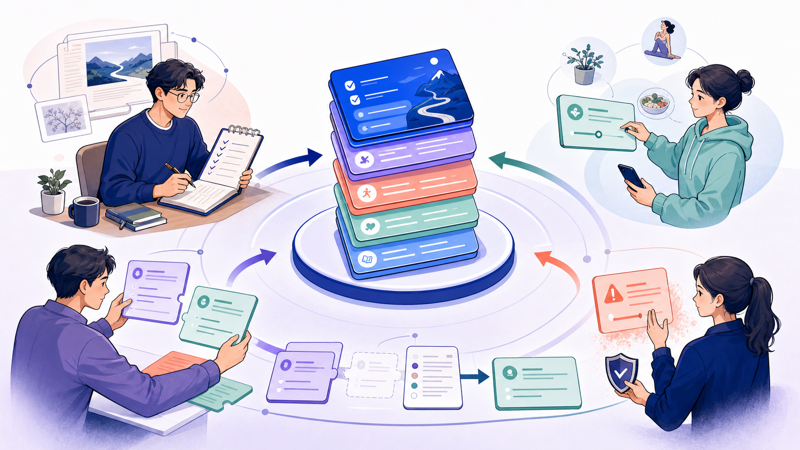
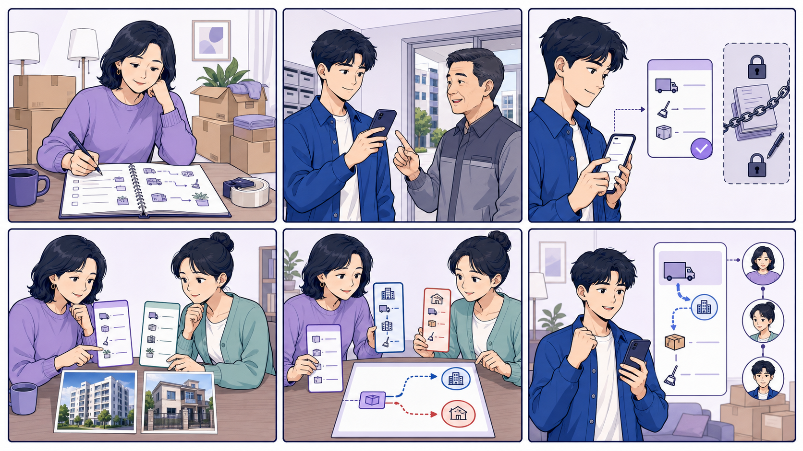
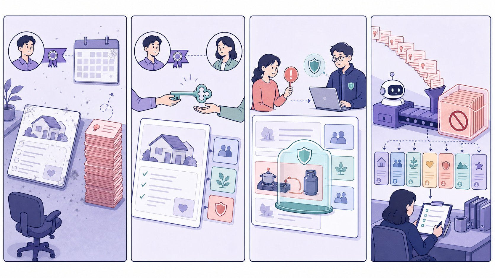

블로그처럼
누가 어떤 경험으로 썼는지, 어떤 사람에게 맞는지, 경험자의 말투와 책임을 남깁니다.
가져올 것 · 최초 작성자, 경험 맥락, 공개 책임FlowMe의 공개 Flow는 한 사람이 영구 소유하는 글도, 모두가 바로 덮어쓰는 위키도 아닙니다. 경험자의 이름과 맥락은 보존하되, 실제 사용자 제안을 공동관리자가 검토하고 조건별 계획으로 발전시키는 저자가 있는 공동관리 실행 계획이 적합합니다.

세 서비스의 화면을 섞는 것이 아닙니다. 사람의 경험, 공동 개선, 공개판 보호라는 서로 다른 문제에 각각 맞는 운영 원리를 배치합니다.
누가 어떤 경험으로 썼는지, 어떤 사람에게 맞는지, 경험자의 말투와 책임을 남깁니다.
가져올 것 · 최초 작성자, 경험 맥락, 공개 책임오탈자부터 오래된 정보까지 여러 사람이 고칠 수 있게 하되, 근거·대화·변경 이력을 남깁니다.
가져올 것 · 기여 이력, 근거, 되돌리기, 공동관리개인 수정은 자유롭게 하고, 공개 Flow에 돌아오는 변경은 차이·이유·담당자 검토를 거칩니다.
가져올 것 · 개인 사본, 개선 제안, 담당 검토, 새 버전이사 D-7과 D-21 중 하나를 투표로 고르는 것이 아니라, 아파트·주말·관리사무소 유무처럼 경험이 달라진 원인을 찾아 상황별 계획으로 나눕니다.
아래는 공식 운영 문서에서 확인한 규칙입니다. 초록은 가져올 원리, 주황은 FlowMe에서 피할 반면교사입니다.
6개 기본 역할로 작성·편집·공개를 나누고, 저장한 변경을 비교·복원합니다.
정지된 사용자의 작성자 표시는 유지하지만, 삭제하면 글을 소유자에게 귀속합니다.
문서는 누구의 소유도 아니며, 합의는 단순 표 수보다 근거의 질을 봅니다.
담당 영역 검토자를 자동 호출하고, 중요한 기준판은 승인과 재검토를 요구할 수 있습니다.
검증 경로의 개인 수정은 별도 사본에 저장하고, 공개 경로 수정은 모더레이터 검토를 거칩니다.
초보 편집자의 제안은 필요한 등급의 편집자가 지역 기준으로 승인·거절하고 이유를 설명합니다.
관련 변경을 하나로 묶고 변경 이유·출처·공개 토론을 남기며, 명백한 공격은 빠르게 되돌립니다.
복제본은 자유롭게 수정하지만 원본의 이후 업데이트가 기존 사본에 자동 반영되지 않습니다.


내 계획 수정, 공개 개선 제안, 상황별 분리, 위험 신고, 새 내용 반영은 서로 다른 행동입니다. 역할을 눌러 각 층에서 가능한 행동을 확인해 보세요.
처음 만든 사람, 현재 관리, 최근 확인, 적용 조건, 변경 이유와 이전 내용이 보존됩니다.
바뀐 부분, 이유, 실행 조건, 근거를 묶고 개인 주소·실제 날짜·메모는 제외합니다.
사용자가 가져간 계획은 자기 것이며 날짜·순서·단계·메모를 승인 없이 바꿀 수 있습니다.
경험의 출발점, 적용 대상, 말투와 최초 공개 맥락을 남깁니다.
담당 부분의 제안을 검토하고 조건별 계획과 새 내용을 공개합니다.
내 계획을 자유롭게 바꾸고 다른 사람에게 보낼 변경만 선택합니다.
안전·권리·악용이 확인될 때 필요한 범위만 임시 제한합니다.
`첫 자취 이사 D-30` 하나를 따라가면 관리 구조가 기능표보다 쉽게 보입니다. 이미지 아래 한국어 설명과 다음 인터랙티브 UI를 함께 보세요.

민호를 포함한 12명이 엘리베이터 예약을 앞당겼습니다. 작성자는 숫자만 보지 않고 어떤 상황에서 달라졌는지 봅니다.
수진은 이사 경험이 많은 현우에게 건물 예약과 업체 연락 부분을 맡깁니다. 권한은 범위와 위험도에 따라 나눕니다.
아파트는 엘리베이터 예약이 필요했지만 빌라는 필요 없었습니다. 다수결로 하나를 지우지 않고 차이를 만든 조건을 찾습니다.
저자 표시는 수진에게 남지만 관리 책임은 현우에게 이어집니다. 관리할 사람이 없으면 새 시작을 권하지 않습니다.
도시가스 설비를 직접 분리하는 것으로 오해될 문장이 신고됐습니다. 해당 항목만 즉시 가리고 공식 근거를 확인합니다.
AI 사용 자체가 문제가 아니라 출처 불명·복제·조작·대량 제출 행동이 문제입니다. 공개 Flow는 자동 변경되지 않습니다.
작성자가 활동 중이어도 공식 정보는 낡을 수 있고, 작성자가 떠나도 공동관리자가 내용을 잘 돌볼 수 있습니다. 두 상태를 분리해서 보여줘야 합니다.

현재 관리자와 근거가 유효합니다. 일반 노출을 유지합니다.
기간 기준은 콘텐츠 종류별로 달라야 합니다. 예: 정책·신청·가격은 짧게, 변화가 적은 취미 절차는 길게. 보고서의 90/180/365일 구간은 UI와 운영 논의를 위한 시작 가설입니다.
오탈자와 안전 문장을 같은 줄에 세우면 공동관리는 느려집니다. 내용의 위험과 사용자 영향에 맞춰 검토 깊이를 다르게 합니다.
오탈자, 끊어진 링크, 뜻을 바꾸지 않는 설명 보강
신뢰받는 공동관리자 1명순서 변경, 준비물 추가, 예상 소요시간 조정
실행 조건 + 공동관리자 검토신청 마감, 예약 시점, 비용 또는 환불에 영향
근거 링크 + 최근 확인일잘못되면 신체·재산·법적 문제를 만들 수 있는 내용
즉시 경고 + 분야 확인 + 2인 검토외부 유료 자료 복제, 주소 노출, 조작·대량 제출
운영팀 별도 처리 + 이의 절차도시가스 설비를 직접 분리하는 것으로 오해될 수 있는 내용
지역 도시가스 고객센터에 신청 · 확인 2026.08.04 · 공식 안내 보기
위 문장은 구조 설명용 가상 사례입니다. 실제 안전 안내로 사용하면 안 됩니다.
신뢰 점수 하나로 숨기지 않고 판단에 필요한 근거를 카드에 직접 보여주는 편이 FlowMe의 차별점과 맞습니다.
인물·횟수·날짜는 화면 설명용 가상 예시
관리권이 바뀌어도 경험의 출발점과 기여 계보는 남습니다.
많이 썼다는 사실보다 나와 비슷한 사람이 어디서 바꿨는지를 보여줍니다.
완벽한 점수처럼 보이게 하지 않고 현재 확인 범위와 남은 문제를 공개합니다.
`실제로 해봤다`는 강한 신호지만, 안전·공식 정보의 정확성을 자동 보증하지는 않습니다.
아래 막대는 외부 성과 수치가 아니라 조사 결과를 바탕으로 한 정성적 제품 판단입니다. 길수록 강합니다.
블로그처럼 목소리는 선명하지만 작성자가 떠나면 쉽게 낡습니다.
위키처럼 빨리 고치지만 경험의 조건과 목소리가 평준화될 수 있습니다.
변경 통제는 강하지만 일반 사용자에게 용어와 절차가 너무 무겁습니다.
품질 통제는 강하지만 모든 분야를 직원이 검토하면 비용과 병목이 커집니다.
저자성은 보존하고, 개인 수정은 자유롭게, 공개 반영은 조건·위험에 맞춰 검토합니다.
이 보고서는 정책 문서로 끝내기보다, 다음 화면과 데이터 구조를 놓치지 않게 만드는 입력물입니다.
처음 만든 사람, 현재 관리, 최근 확인, 적용 조건, 확인이 필요한 내용을 한 화면에 표시합니다.
내가 바꾼 항목 중 보낼 것만 고르고, 주소·실제 날짜·개인 메모가 제외됐는지 확인합니다.
변경 전후, 이유, 조건, 같은 제안, 근거를 보고 반영·상황별 분리·추가 정보 요청·유지를 결정합니다.
다시 확인 필요, 후임 공동관리, 참고용 보관, 항목별 긴급 제한과 복구·이의 기록을 설계합니다.
공개 Flow와 기여 내용의 복제·수정·외부 내보내기 범위, 유료 Flow의 관리 종료와 기존 사용자 권리, 의료·법률·안전 분야의 검토 자격은 법률·운영 검토가 필요합니다. 이 보고서는 방향과 UI 가설이며 최종 이용 규칙을 확정하지 않습니다.
공식 서비스 문서의 운영 규칙을 비교했습니다. FlowMe 시나리오와 수치는 구조 설명용이며, 실제 사용자 검증이나 성과 측정 결과가 아닙니다.
확인됨: 공식 문서의 역할·검토·수정·복구 규칙.
화면 구상: FlowMe 적용 제안.
가상 사례: 인물, Flow, 제안 수, 처리 수치.
확인하지 못함: 실제 사용자의 채택, 완료, 품질 개선.